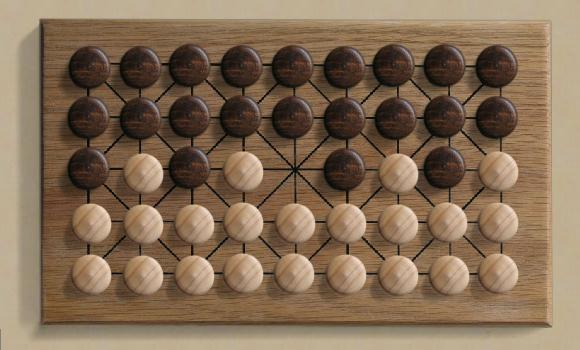

| Français
|
|
|  |
Arrange the 22 pieces for each player as shown. Moving: White moves first. Pieces are moved by sliding one space along one of the the lines. Note that some points lie on diagonal lines, while others have only horizontal and vertical directions. Capturing: you can capture a line of your opponent's pieces by approach by moving toward them into the adjacent space, or by withdrawal by starting in the adjacent space and moving directly away from your opponent's piece. In some positions, you could capture either way, and you must choose one or the other. A Turn: consists of either a single, non-capturing move, or a sequence of capturing moves. If any capturing moves are possible anywhere on the board, then a capturing move must be made. If multiple captures are possible, you can choose which to do. Subsequent captures on the same turn are optional. Second and subsequent captures in the same turn are subject to some restrictions:
|
Elementary observations:
|
|
| E-Mail: | Go to BoardSpace.net home page |